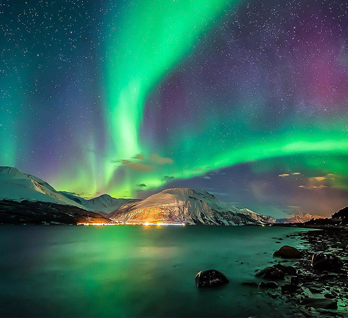
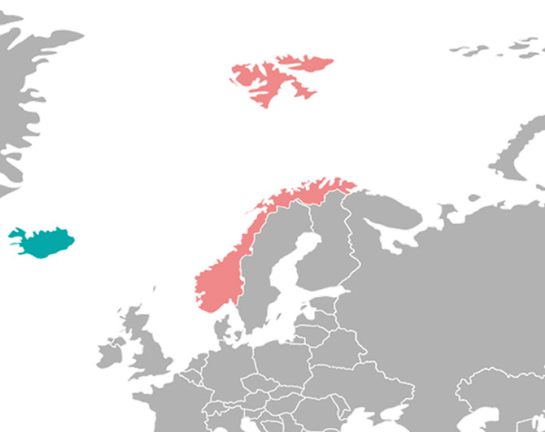

Легенды народов севера о полярном сиянии

Факты о северном сиянии
- 01Наблюдаются преимущественно в высоких широтах обоих полушариях
- 02Спектр полярных сияний меняется с высотой.
- 03Полярные сияния весной и осенью возникают заметно чаще, чем зимой и летом.

Где и когда
Наблюдать сияние можно в Якутске, Салехарде, Мурманске, на Таймыре и на Аляске. Наиболее часто полярное сияние встречается в областях близ Аляски, в Гудзоновом заливе, в Большом Медвежьем озере, Исландии, южной части Гренландии, на севере Норвегии и Сибири.
- летом
- зимой
- весной
- осенью
Отзывы

Контакты
Финляндия
Норвегия
Якутия
Аляска
Исландия
Мурманск
Цены
- Финляндия
- Норвегия
- Якутия
- Аляска
- Исландия
- Мурманск
| Город | Локация | Стоимость |
|---|---|---|
| Осло | Отель “Сияние”, 5 км от города | 250 000 \руб/чел |
| Осло | Отель “Сияние”, 5 км от города | 250 000 \руб/чел |
| Город | Локация | Стоимость |
|---|---|---|
| Осло | Отель “Сияние”, 5 км от города | 250 000 \руб/чел |
| Осло | Отель “Сияние”, 5 км от города | 250 000 \руб/чел |
| Город | Локация | Стоимость |
|---|---|---|
| Осло | Отель “Сияние”, 5 км от города | 250 000 \руб/чел |
| Осло | Отель “Сияние”, 5 км от города | 250 000 \руб/чел |
| Город | Локация | Стоимость |
|---|---|---|
| Осло | Отель “Сияние”, 5 км от города | 250 000 \руб/чел |
| Осло | Отель “Сияние”, 5 км от города | 250 000 \руб/чел |
| Город | Локация | Стоимость |
|---|---|---|
| Осло | Отель “Сияние”, 5 км от города | 250 000 \руб/чел |
| Осло | Отель “Сияние”, 5 км от города | 250 000 \руб/чел |
| Город | Локация | Стоимость |
|---|---|---|
| Осло | Отель “Сияние”, 5 км от города | 250 000 \руб/чел |
| Осло | Отель “Сияние”, 5 км от города | 250 000 \руб/чел |